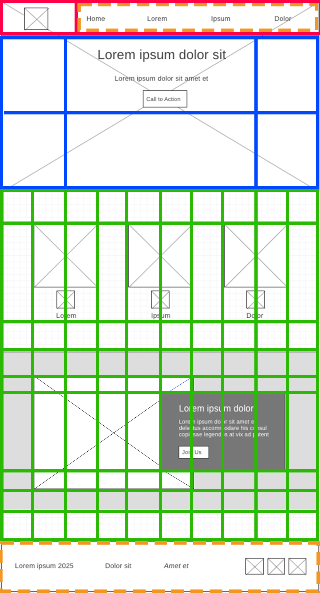
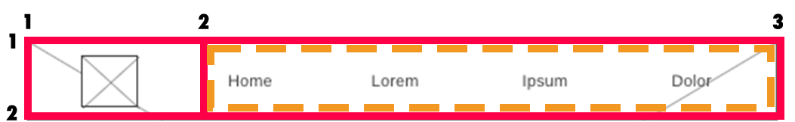
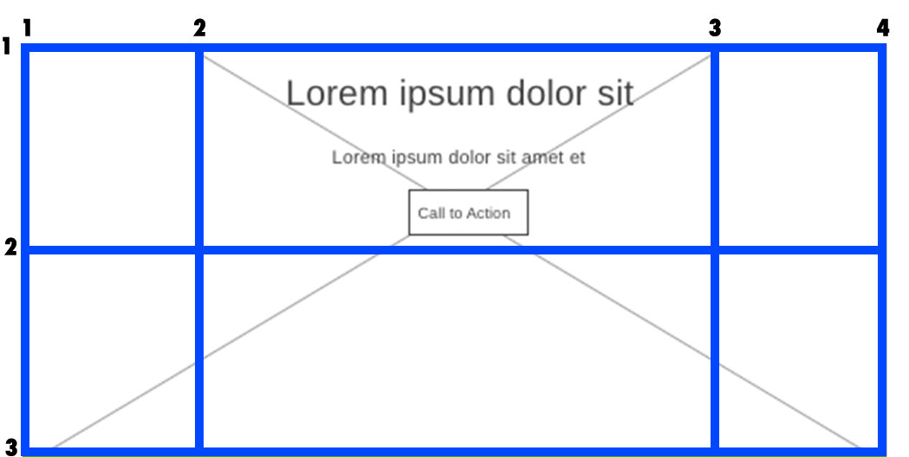
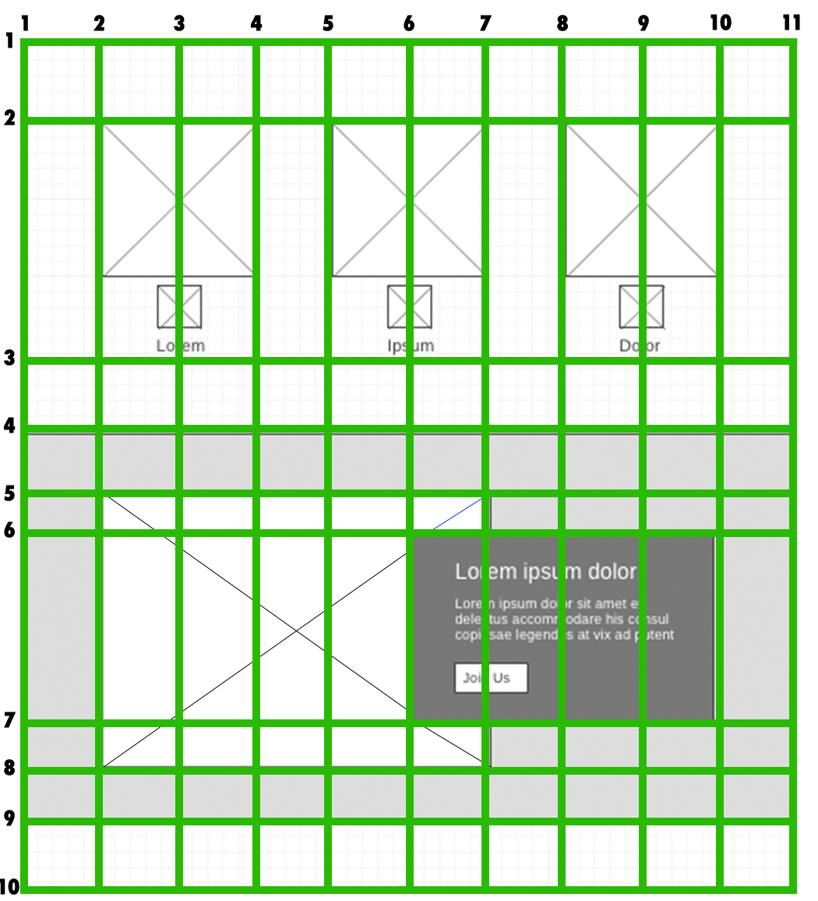

We have made a lot of improvements to our page over the last few
weeks. This week we finally take on the layout. After we finish the
layout of our page, it should look very similar to the wireframe and
will be close to complete.
We will be creating three grids for this home page. One in the header, one for the hero portion, and one for the
main portion.
We will also be creating two simple flexbox layouts for the nav links and the footer.

The instructions below are expecting a certain structure in your
HTML to work. If you followed the instructions in the
Getting Started
activity you should have it. Let's start with the header. It should look similar to the
following:
Make any changes necessary to have yours match what is above. (HTML
only. Your images and text can be different.)
Header Grid
The header wireframe with grid looks like this:

<header> will be the parent or grid container. It has two children: the
<a> that surrounds our logo and the nav element. They are the only grid items
we will be able to place in our grid. It will be a simple two-column, one-row grid.
Add the display: grid; declaration to the header selector. Set up the
grid-template-columns giving the two column values of 150px and auto. This
gives 150px to the logo
and the rest of available space to the navigation.
The HTML for the hero should look similar to this:
<div id="hero">
<div id="hero-box">
<img id="hero-img" src="images/hero.png" alt="People enjoying white water rafting">
</div>
<section id="hero-msg">
<h1 class="home-title">Have An Adventure</h1>
<h4>Make Memories with Dry Oar</h4>
<div class="button-box">
<a class="book" href="rates.html">Book Now</a>
</div>
</section>
</div>
Again, you may have a different image or text.
For the next grid, the <div> with the id of hero will be the grid container,
or parent.
The two children are the <div> with the id of hero-box containing the image,
and the
<section> with the id of hero-msg containing the text and button that goes
over the
image.
The hero wireframe with grid looks like this:

Because we want the text message and button to take about 60% of the width we could use five
fractions and have
it take three of those five fractions. We could use repeat(5, 1fr) and have it span over three columns or we
could use
1fr 3fr 1fr. We will also implicitly use two rows so the message is near the top of the image in
the first
row. The hero image will cover the entire grid.
Set up the grid for the hero portion by adding the display: grid and grid-template-columns:
1fr 3fr 1fr.
The children get implicitly placed into the first and second spots on the grid. This is not what we had
planned, so we need to explicitly place them.
Place the <div> with the id of hero-box across the entire grid. Spanning
column lines 1–4 and
row lines 1–3.
#hero-box {
grid-column: 1/4;
grid-row: 1/3;
}
Place the <section> with the id of hero-msg to spanning column lines 2–3
and row lines
1–2. Try it without a code example this time.
Notice certain text colors may not be easy to see now since their background has changed. For example, my <h4> text was black so it was hard to read over the dark
image. I would change the font color to white. Check your text and see if you need to change any colors to have a better contrast.
#hero-msg h4 {
color: white;
}
Overlap hero with navigation
If we want our hero image to overlap with the navigation while still leaving the navigation layout the same
for other pages of our website, we can use a negative top margin on our <div> with the id
of hero. Add a margin-top of -100px. This will push the hero image over the
navigation by 100px.
We also need to push the hero text and button down by the same measurement so it doesn't go over the top of
the navigation menu. Add a top margin of 100px to #hero-msg.
It seems as if the header disappeared. That's because the hero image has overlapped it. Set a
z-index of -1
to the #hero-box to send it back a layer on the z-axis.
The reason we overlapped the image with the header is because you may have used a rgba opacity with the header background color and changing the top margins lets the image show through a bit. If you decided not to use any opacity in your background color of your header, your header may look different than the example at the bottom of the assignment. You may even wish to skip the overlapping step if you wish.
Main Grid
The <main> portion of our page will have a grid with many more columns and rows. It will
encompass all the rest of the page minus the footer.
The main wireframe with grid looks like this:

The HTML for the <main> portion of the page should look similar to this:
<main class="home-grid">
<section class="rivers-card">
<img class="card-img" src="images/rivers.jpg" alt="river in forest">
<img class="icon" src="images/river_icon.png" alt="river icon">
<h2>Rivers</h2>
</section>
<section class="camping-card">
<img class="card-img" src="images/camping.jpg" alt="tent in mountains">
<img class="icon" src="images/fire_icon.png" alt="fire icon">
<h2>Camping</h2>
</section>
<section class="rapids-card">
<img class="card-img" src="images/rapids.jpg" alt="rafting boat">
<img class="icon" src="images/oars.png" alt="oars icon">
<h2>Rapids</h2>
</section>
<div id="background"></div>
<img class="mountains" src="images/mountains.jpg" alt="Misty mountains">
<section class="msg">
<h2>More Than Just The Thrill</h2>
<p>Enjoy the breathtaking scenery. From valleys, meadows, canyons, and high peaks; it's way more than just the rapids. It's a great way to get away from it all and relax amongst all the beauty of the great outdoors. </p>
<a class='join' href="rivers.html">Join Us</a>
</section>
</main>
The parent container will be the <main> element with the class of home-grid.
It will have
10 equal columns.
The children are the three card <section> elements, the <div> with the id
of
background, the <img> with the class of mountains, and the
<section> with the
class of msg.
Remember, grids can be constructed either explicitly: you define
everything about the grid, column number and widths, row number
and heights, and where every item should be placed, or
implicitly: you let the browser make as many of the
decisions as possible. Most grids are a mix of both. All grids
need to have some columns defined, but after that, the browsers
will implicitly create rows as needed.
If you review the 'Layout with grid lines' image above, you will
see that the rows are not all the same height. You may have been
wondering how you are to know how big to make each row? I'll let
you in on a little secret: you don't have to know in many cases.
You can often let the browser figure it out!
Let's give our <main> with the class of home-grid the display: grid
declaration and the
grid-template-columns an equal 10 fractions.
You will see that because the images are large, they make the columns very large as well. Let's make sure
that the images with the classes card-img and mountains have a width of
100%. As they get placed in the grid, they
will take up 100% of the space they are given.
.card-img, .mountains {
width: 100%;
}
Place each of the children as follows:
.rivers-card from column lines 2–4 and row lines 2–3
.camping-card from column lines 5–7 and row lines 2–3
.rapids-card from column lines 8–10 and row lines 2–3
#background from column lines 1–11 and row lines 4–9
.mountains from column lines 2–7 and row lines 5–8
At this point, your site is mostly done. There are a few things that could
be done to dress it up a bit though.
First, let's add a fun hover effect on each of our card images. This involves using some properties we
haven't seen yet. You can learn more about them here: https://www.w3schools.com/css/css3_transitions.asp
We are adding a half-second transition on our images. The transition happens when the user hovers over the
images. At that point, the transform property makes the image 110% bigger, and it appears 40% transparent.
Add a shadow to the image with box-shadow. Learn more about box-shadow at: https://www.w3schools.com/cssref/css3_pr_box-shadow.asp.
The four values describe the horizontal and vertical offset, the blur, and the color of the shadow. You can use
a gray or black or a darker color from your color palette.
Nearly there. Congratulations on making it this far! Your page
should be looking great in the browser on your laptop. What does
it look like on a smaller screen like a mobile phone, though?
Reduce the width of your browser window to see. It doesn't look great.
Responsive design is a process that most web designers
apply to their sites to make them look great on a wide variety of
screen sizes. One of the key parts to a responsive design is a
@media query. These let us change our CSS based on the
width of the browser window and other things as well.
For example, we can make our page responsive by adding a media query to it. Copy and paste the following to
the
bottom of your CSS:
Media queries always need to be after all the other CSS. Don't add any CSS after the media query later
either.
This could be read as follows: "If the max width of the screen gets smaller
than 900px, then use this CSS instead of what you may have seen
above" for these selectors.
This CSS will not go into effect unless the screen is less than 900px;
Some grids were turned off with display: block, and the flex-boxes were changed from rows to
columns. The rest is all minor adjustments to make it look good on the smaller screen.
You may notice display: none was used on a few selectors to make them disappear. Those elements
weren't necessary, and not having them on a smaller screen makes it look less cluttered.
Check, validate, and submit
Preview your site to make sure the webpage displays correctly.
Once verified, submit the URL for your page to I-Learn.
Make sure to validate the
HTML
and
CSS of your page and
fix any errors that show.
Here is what the finished home page might look like:
Here is what the finished home page might look like on a smaller device: